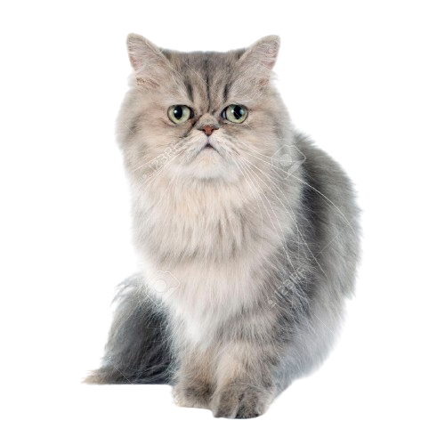

Cooper
4 years old
Male
7 Kilograms
Persian
Presenting Cooper, the sophisticated Black Smoke Persian Kitten ready to add elegance and charm to your house! Cooper will enchant you with his intriguing eyes and gorgeous coat. He is eager to give you hugs and kisses and is fun and loving. Cooper is a wonderful addition to any home. He is vaccinated, trained to use a litter box, and looking for a caring permanent home. Get in touch with PAWS for Love to begin transforming Cooper into a treasured family member right now!